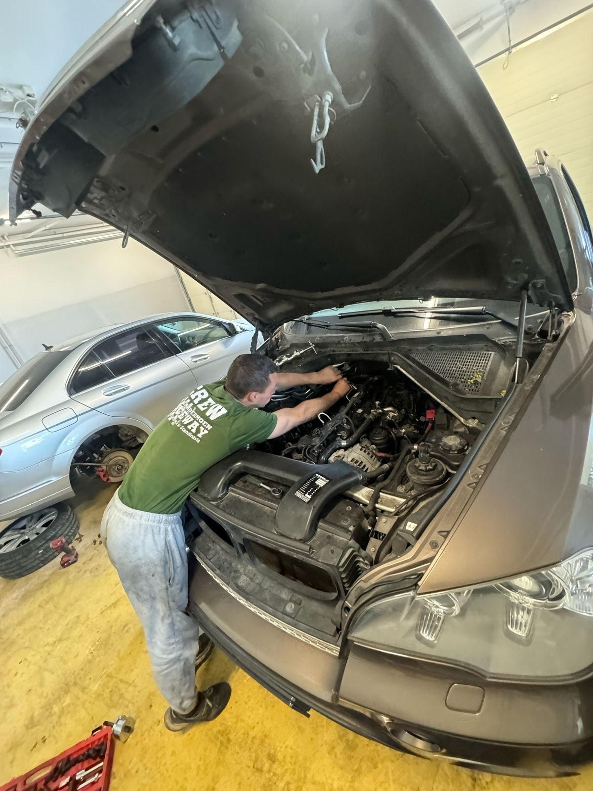
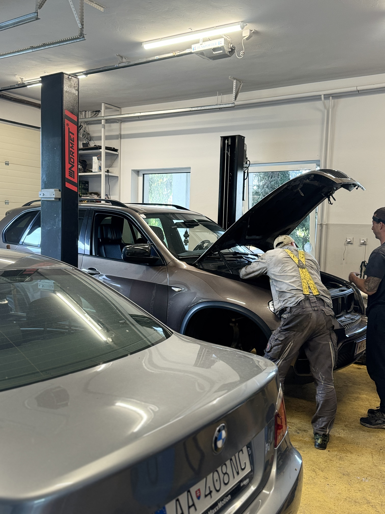
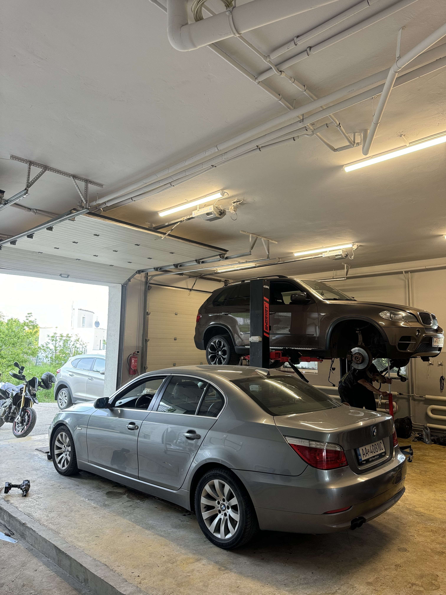

Výmena rozvodov (BMW, Mercedes, Range Rover a iné)
Servis automatických a manuálnych prevodoviek: DSG / DQ200 / DQ250 / DQ500
Výmena dvojspojkových prevodoviek
Doliatie oleja
Starostlivosť o vzhľad vášho vozidla:
Hĺbková chemická čistička interiéru
PDR – odstránenie preliačin без lakovania
Leštenie karosérie a svetlometov
Vlepenie nových skiel
Oprava škrabancov і prasklín на skle
Tónovanie skiel
Lokálne lakovanie
Oprava nárazníkov
… а mnoho ďalšieho!
Aktuálne akcie a zľavy
Online rezervácia s odmenou – Zapojte sa do žrebovania o skvelé ceny!
📅 Rezervujte si online termín ešte dnes a získajte exkluzívnu možnosť zúčastniť sa každoročného žrebovania o hodnotné ceny pre vás a vaše auto.
Prečo túto akciu robíme?
Pretože zákaznícka spokojnosť a vernosť sú pre nás prioritou. Ako jedni z mála vám chceme ponúknuť viac než len kvalitné autoslužby – odmeňujeme vašu dôveru!
Kto sa môže zapojiť?
Táto exkluzívna ponuka platí pre všetkých zákazníkov, ktorí si vytvoria online rezerváciu. Či už ste nový zákazník alebo verný klient, každý má rovnakú šancu vyhrať!
Čo môžete vyhrať?
Darčekové poukazy
Produkty a služby pre vaše auto
A mnoho ďalších prekvapení
Otváracie hodiny
Pondelok – Piatok: od 9:00 do 17:00
Sobota: podľa dohody / na objednávku
Nedeľa: zatvorené
O nás
🔧 Autoservis Bratislava – Spoľahlivý partner pre vaše auto
Hľadáte kvalitný autoservis v Bratislave? Sme moderný servis, ktorý spája profesionalitu, vysokú kvalitu a čestný prístup. Náš skúsený tím mechanikov sa špecializuje na údržbu a opravy všetkých značiek a modelov automobilov.
Poskytujeme kompletné autoservisné služby v Bratislave – od počítačovej diagnostiky, výmeny oleja a filtrov, cez servis bŕzd, tlmičov, klimatizácií, až po náročné opravy motora a podvozku. Používame iba overené vybavenie a kvalitné náhradné diely, vďaka čomu zaručujeme dlhodobú spoľahlivosť a bezpečnosť vášho vozidla.
Prečo si vybrať práve náš autoservis v Bratislave?
✔️ Skúsení a školení mechanici
✔️ Férový a transparentný prístup
✔️ Rýchle termíny a dostupné ceny
✔️ Dôraz na kvalitu a spokojnosť zákazníka
Vyberte si náš autoservis a získajte spoľahlivého partnera, ktorý sa postará o vaše auto tak, akoby bolo jeho vlastné.
Objednajte sa online a využite aj možnosť zapojiť sa do súťaže o atraktívne ceny!
📸 Fotogaléria



×
❮❯
Cennik
💶 Ceny služieb – Autoservis Bratislava
V našom autoservise v Bratislave ponúkame najlepšie ceny, ktoré sú vždy primerané kvalite a náročnosti vykonanej práce. Rozumieme, že ceny sú dôležitým faktorom pri výbere správneho autoservisu, a preto sa vždy snažíme poskytovať našim zákazníkom ferové a transparentné cenové ponuky.
🛠️ Ako sa určujú naše ceny?
Ceny za naše služby závisia od náročnosti práce, potrebného vybavenia a kvality náhradných dielov. Niektoré opravy, ako výmena oleja alebo diagnostika, môžu byť cenovo dostupné, zatiaľ čo zložitejšie opravy, ako sú opravy motora alebo podvozku, si vyžadujú vyššie investície do času a materiálu.
⚙️ Čo zahrňuje cena našich služieb?
Diagnostika a analýza závad – včasná identifikácia problémov vám môže ušetriť náklady na neskoršie opravy.
Opravy a výmena dielov – používame len kvalitné náhradné diely, ktoré zaručujú dlhodobú spoľahlivosť a bezpečnosť vašich vozidiel.
Pravidelná údržba – vyváženie bŕzd, kontrola tlmičov a iné drobné opravy sa vykonávajú za cenovo dostupné ceny, aby vaše vozidlo bolo vždy v perfektnom stave.
🔧 Prečo si vybrať práve náš autoservis v Bratislave?
✔️ Adekvátne ceny, ktoré sú v súlade s kvalitou a odborným spracovaním.
✔️ Férový prístup a transparentnosť v cenových ponukách.
✔️ Rýchle termíny a pružnosť pri plánovaní opráv.
Vyberte si náš autoservis a získajte spoľahlivého partnera, ktorý sa postará o vaše auto tak, akoby bolo jeho vlastné. Kontaktujte nás pre viac informácií o cenách alebo pre konkrétnu cenovú ponuku na mieru podľa vašich potrieb.